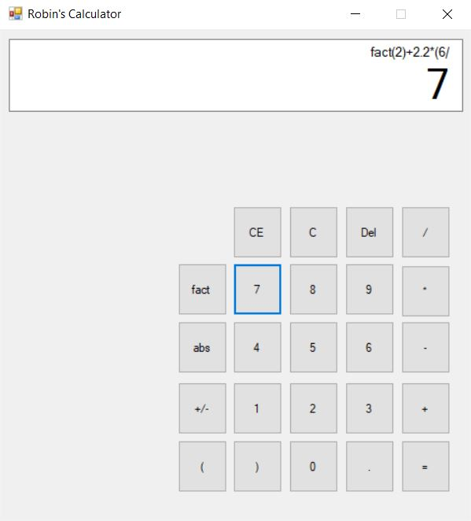

My name is Robin Pan and I am a third year Computer Science student at the University of Waterloo. In the past year, I have interned as a full-stack developer at MyTime and also at Mercury Mortgages. I am currently searching for an internship for the winter of 2019.
A copy of my resume can be found here
I am beginning the third year of Waterloo's Bachelor of Computer Science program. In my studies, I have formally studied data structures, algorithm design, object-oriented programming, version control, scripting, compiler design, computer architecture and discrete mathematics.
I am proficient with C and C++, as I used them often in my computer science courses and for personal projects. I have worked closely with various web development languages and frameworks including Laravel PHP, Ruby on Rails, AnguarJS, JQuery and Bootstrap during some of my internships as well as for personal projects.
During my free time, I typically play music, work on personal projects, or watch the Ottawa Senators.
I am an avid pianist, having studied piano and music theory intensively for 14 years. I have attended many competitions, with success in the provincial and national levels. Some achievements include: being awarded with the highest mark in Canada for my RCM grade 8 exam, receiving scholarships in the provincial and national levels of the Canadian Music Competition, and winning local Kiwanis competitions against undergrad music students as a 14-year-old.
Some of my other pastimes include swimming, table tennis, and video games (particularly Super Smash Bros).
This section of the website is dedicated to projects which I have worked on during my free time.
GitHub: robin-pan.
Based on Atari's snake, I used C++ design patterns (subject-observer, singleton) along with the Oxygine library to implement the game. Then, I transpiled the C++ code to Javascript using Emscripten so that it can be embedded into the link below. This project is still in progress.
Originally, this project was a command line arithmetic calculator which I made using C++ as an OOP exercise. I then decided to add GUI, but could not find an appropriate C++ library. Thus, I decided to learn C# and made both the front-end and back-end.
This calculator takes an arithmetic expression in infix format, converts the input to postfix format using the Shunting-Yard algorithm, and evaluates the expression. A finite state machine is used to control user inputs (ie a binary operator cannot be followed by another binary operator). The mathematical operators are set up polymorphically, allowing them to be generic.

My introduction to web development was through the process of making this website. This project has allowed me to take a significant step forward with my web design skills.
The website is built using HTML, CSS, Javascript, as well as JQuery, and is completely responsive with mobile support.
During my musical 'career', I had the opportunity to play Beethoven's 3rd Concerto with an orchestra after finishing top 5 in a local competition. The following is the audition video that I sent in.
Some covers of anime soundtracks.
You can reach me at: